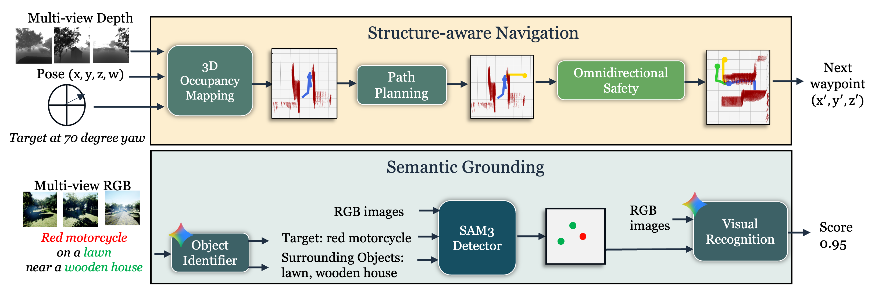
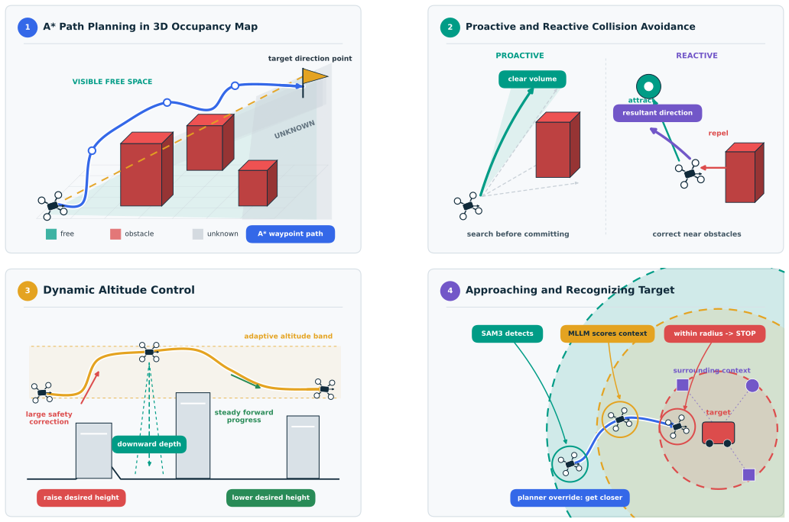
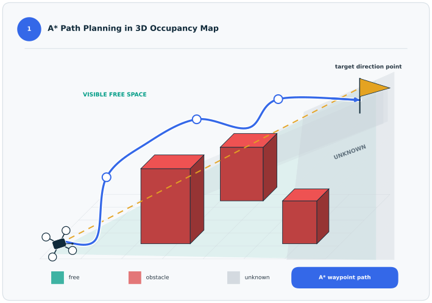
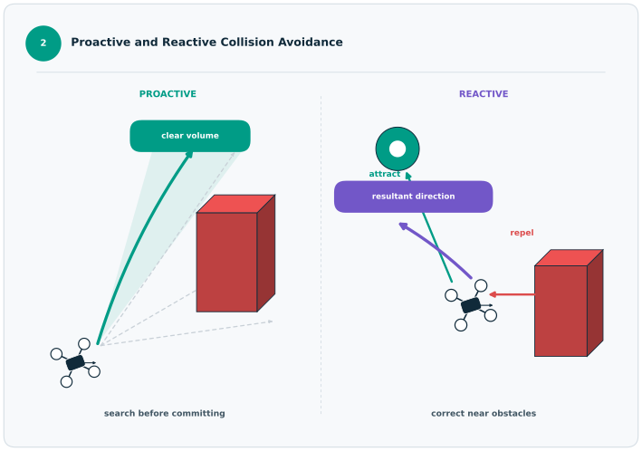
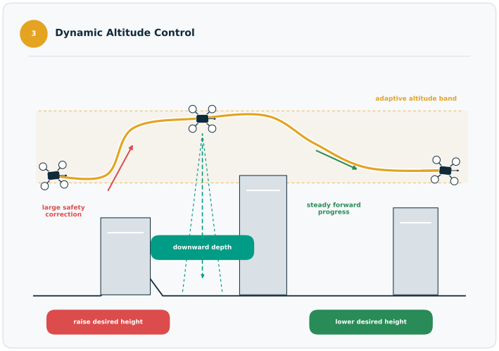
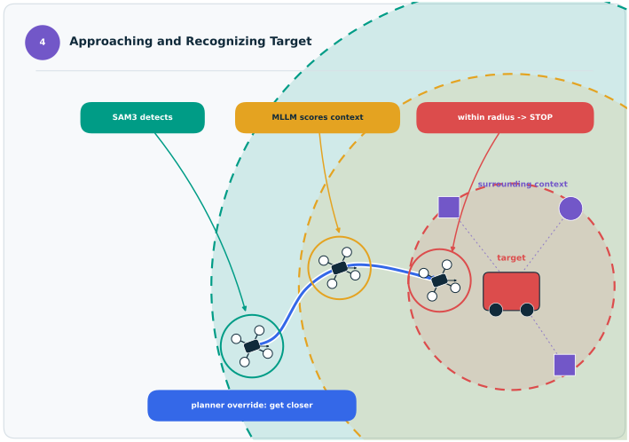
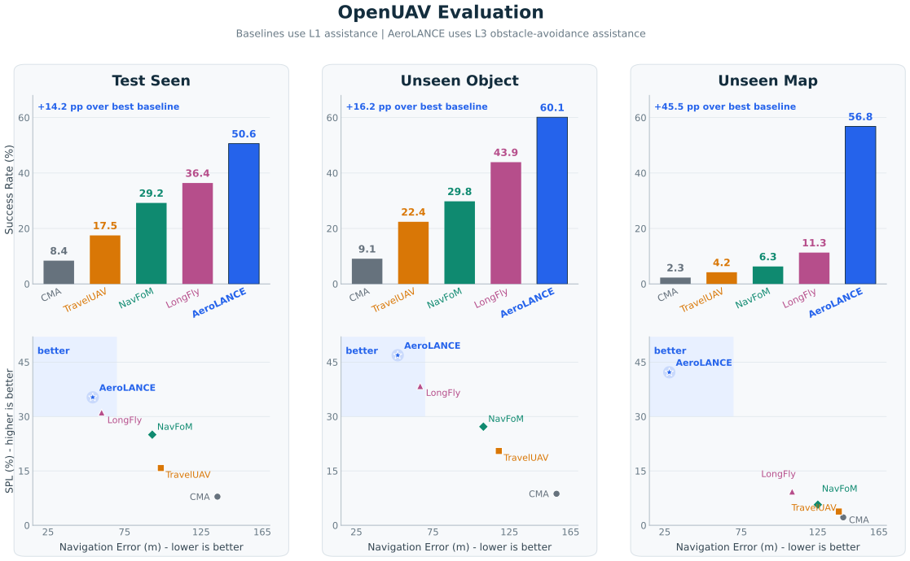
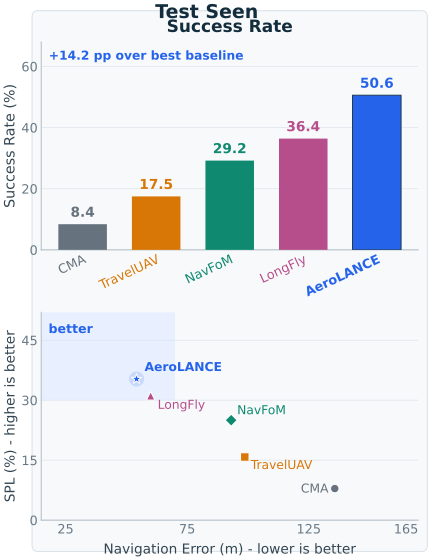
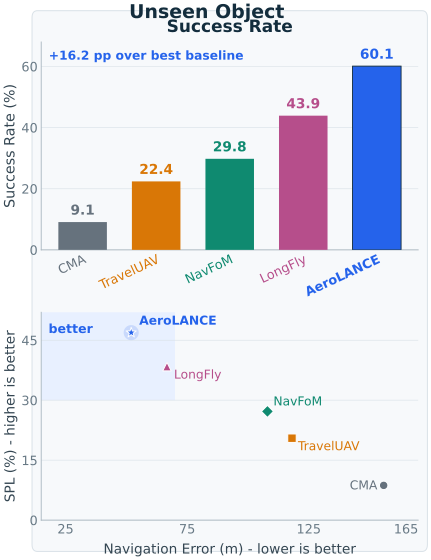
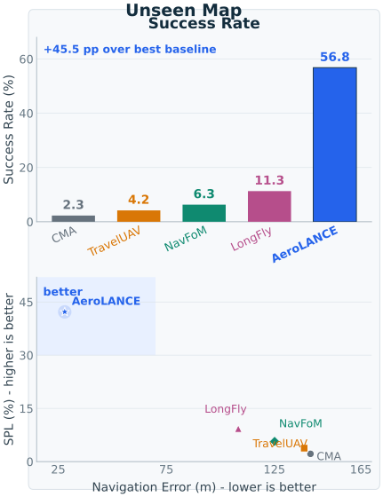

TL;DR: AeroLANCE decouples spatial navigation from semantic grounding for training-free aerial VLN.
Aerial Low-Altitude Navigation in Complex Environments (AeroLANCE) is a training-free framework for aerial vision-language navigation (VLN) that separates geometric navigation from semantic grounding. Rather than asking a single model to learn language understanding, visual recognition, mapping, and collision avoidance jointly, AeroLANCE employs two separate components -- one for structure-aware navigation and another for semantic processing. The structure-aware navigation component handles 3D mapping, path planning, and safety with classical spatial algorithms, while the semantic processing component uses pretrained foundation models to parse instructions, detect objects, and verify target instances. This decoupled design allows AeroLANCE to generalize across various environments without task-specific navigation training and transfer to real-world DJI Tello flights.
Contributions:





Occupancy-aware planning builds a live 3D map and uses A* search to select short, obstacle-aware waypoint paths. Omnidirectional safety first searches for a clear movement volume, then combines repulsive, attractive, and evasion vectors to preserve clearance near obstacles. Dynamic altitude control raises the desired flight height when safety corrections grow and lowers it during steady progress to recover ground visibility. When SAM3 finds a candidate, target recognition enters get_closer, gathers surrounding-object context for MLLM scoring, and triggers STOP only when both confidence and proximity conditions are met.




AeroLANCE leads all three OpenUAV splits in success rate and Success weighted by Path Length (SPL), while producing the lowest navigation error. Its generalization advantage is most pronounced on Unseen Map, where it reaches 56.8% success with 28.0 m navigation error, compared with the strongest baseline at 11.3% success and 108.3 m error. The upper-left region of each scatter plot is preferred because it combines lower error with more efficient successful trajectories.
Instruction: The target is at a yaw angle of 0 degrees from your current orientation. Go to the water bottle which is near a computer monitor and a keyboard.
Instruction: The target is at a yaw angle of 180 degrees from your current orientation. Go to the water bottle which is on a chair.